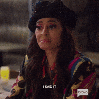
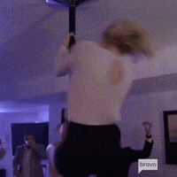

The Real Housewives of Salt Lake City, (abbreviated as RHOSLC), is an American reality television series originally developed and cast by Los Angeles based production company InventTV and then Shed Media. It is broadcast on Bravo. The Salt Lake City series is the tenth installment of The Real Housewives franchise, and it follows the personal and professional lives of women who live in or near Salt Lake City, Utah. It has aired four seasons in total; with the first season having premiered on November 11, 2020, and the most recent season, fourth season, premiered on September 5, 2023.

The first season consisted of original cast members: Lisa Barlow, Mary Cosby, Heather Gay, Meredith Marks, Whitney Rose and Jen Shah. The show's current cast includes Barlow, Gay, Marks, Rose and Angie Katsanevas, with Cosby appearing as a friend of the housewives. Previous housewives include Shah, Jennie Nguyen and Monica Garcia.

Commercially, season two had the highest average viewership of 0.71 million, while season four had the lowest at 0.53 million. The controversial season four finale is the highest-viewed episode in the series, averaging over two million viewers across all platforms.